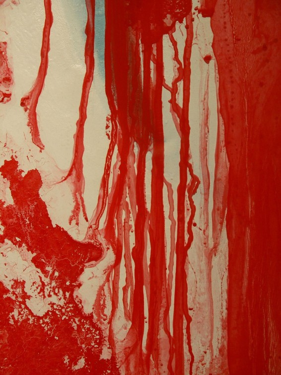
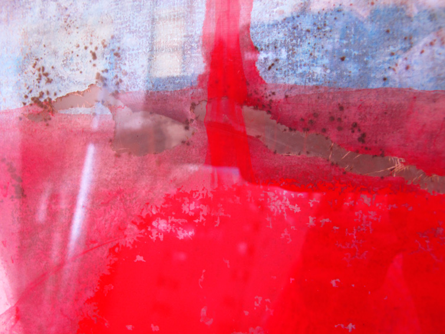
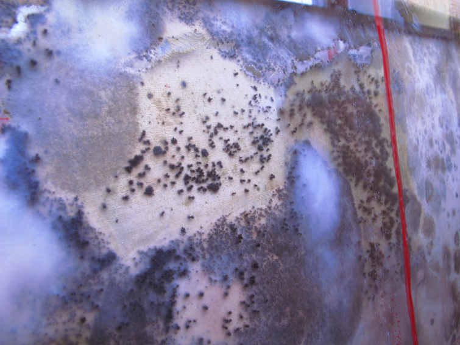

z cyklu unicestwienie CZERWONY




Cykl ten powstawał w czasie akcji pt. WOJNA DWUNASTOMIESIĘCZNA.Obiekt w pleksi. Akryl, technika własna na płótnie zalany farbą akrylową w pojemniku z pleksi – obraz w procesie 150x150x5cm, CSW Toruń, 2010/2013
szczegół
proces unicestwienia po pół roku, szczegół